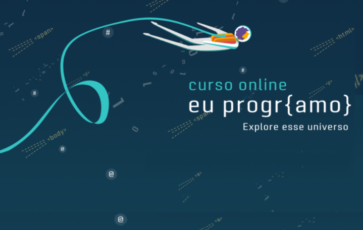

CURSO EU PROGR{AMO}
Desbrave o universo dos códigos com este curso de introdução à programação com foco em desenvolvimento web. Nele você vai dar o primeiro passo da sua jornada! Vai aprender conceitos básicos de programação para fazer suas páginas web. O principal requisito para embracar com a gente é a vontade de aprender!
- HTML: É a linguagem de marcação principal de toda a web. Nesse curso você vai aprender como ela funciona e como montar páginas simples.
- CSS: Cascading Style Sheets (CSS) complementa o HTML, dando estilo e forma às suas páginas web. Domine os conceitos básicos para fazer seu site ficar mais atrativo.
- JavaScript: É a linguagem de programação mais utilizada na web. Ele é responsável pela maioria das interações que vemos nos sites.
- Lógica: A lógica de programação é fundamental para quem está começando. No curso, vamos usar JavaScript para passar pelos conceitos básicos, como algoritmos, operadores lógicos, funções, entre outros.